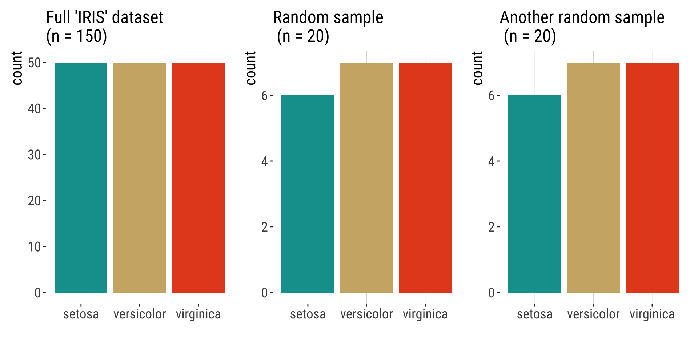
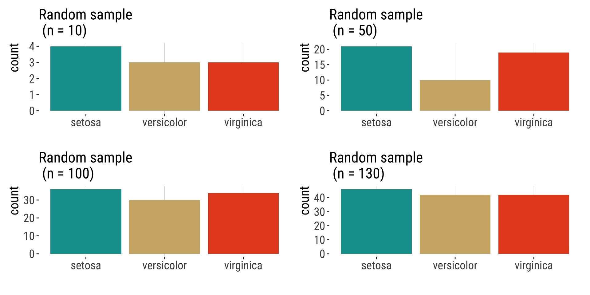
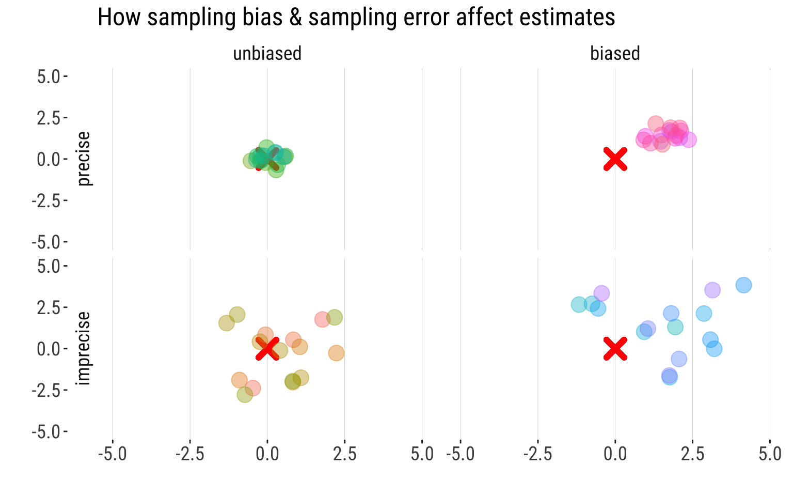
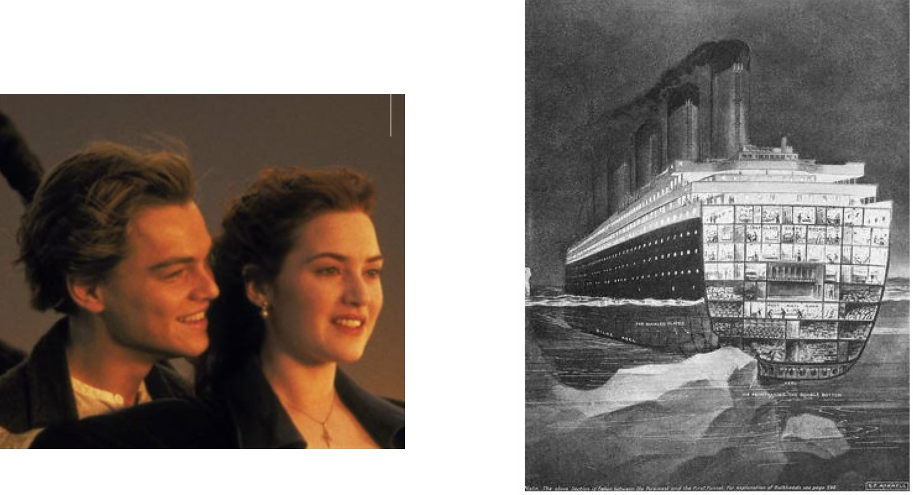
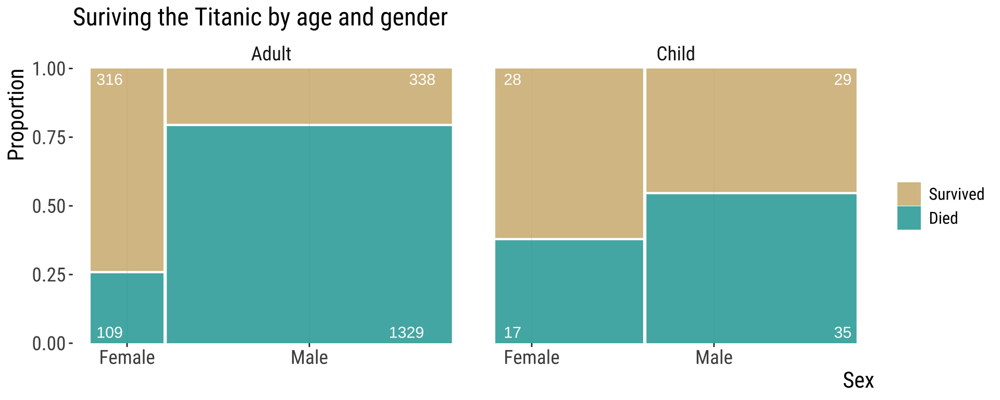
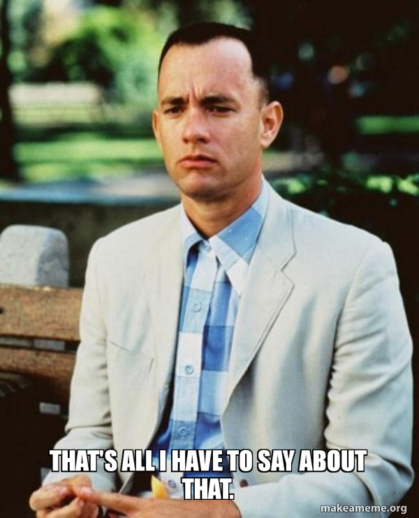

1.2.Statistics and Samples
Bárbara D. Bitarello
2025-09-08
Quick recap
Last lecture we discussed:
- Population vs. sample
- Parameter vs. estimate
- The two types of errors associated with sampling: sampling error and sampling bias
Today
Goals of statisticsPopulations and SamplesStatistics and parameters- Estimate errors due to sampling
- Types of experiments
- Types of variables
- Types of studies
Learning Goals
Understand the major goal of statisticsDistinguish between a sample and a populationDistinguish between an estimate and a parameter- Identify why estimates from samples may deviate from parameters of populations
- Identify the properties of a good sample
- Be able to detect the differences between observational and experimental studies
Volunteer bias
Volunteers for a study are likely to be different, on average, from the population. Also known as “self-selection” bias.
For example:
- Volunteers for sex studies are more likely to be open about sex.
- In surveys about sexual activity, gender biases answers in opposite directions.
- Volunteers for medical studies may be sicker than the general population.
- Animals that are caught may be slower or more docile than those that are not.
- The case we saw about the 1936 U.S. elections.
Selection bias
![[Blondie is standing on a podium behind a lectern with a microphone. She is standing under a hanging sign with large text. In front of the podium is an audience of five seated persons all with their hands raised above their heads. The audience includes two guys that look like Cueball, Hairbun, and two other persons with dark and blonde hair.] Sign: Statistics Conference 2022 Blondie: Raise your hand if you’re familiar with selection bias. Blondie: As you can see, it’s a term most people know...](https://imgs.xkcd.com/comics/selection_bias.png)
Sample of convenience
A sample of convenience is a collection of individuals that happen to be available at the time.
Other definitions1:
A convenience sample is the one that is drawn from a source that is conveniently accessible to the researcher.
A purposive sample is the one whose characteristics are defined for a purpose that is relevant to the study.
Sample of convenience
Problems:
- “In research, we therefore implicitly seek to generalize the findings from our sample to the entire population, present and future.”1
- low generalizability. What is true for your sample might not reflect what is true for the population.
- in practice, you can only generalize findings to the subpopulation from which the sample was taken from.
- sometimes, a sample of convenience is the best option researchers have (e.g. studies that extract data from national healthcare or insurance databases)
- It is rarely possible to draw a truly random sample from the population
This does not invalidate the studies in question. They can have high “internal validity”. The issue is with generalizing, i.e, its external validity.
What about sampling error?
Sampling error: Chance deviations between estimates and the truth.
Even when you did NOTHING wrong.
Sampling error is the difference between the estimate and its true parameter value — and it can be quantified!
Example of sampling error
Sampling error declines with sample size
Estimates are random variables
Because an estimate is a random variable, the value of an estimate is influenced by chance.
Therefore estimates will differ among random samples from the same population.

How bias and sampling error affect estimates
Sampling Bias
- Systematic difference between estimates & parameters.
- Driven by bias in the sampling process (i.e., sample not random in relation to the population of interest), regarless of sample size.
Sampling Error
- Undirected deviation of estimates away from parameters.
- Driven by chance.
- Decreases with sample size.
Goals of estimation
Accuracy (on average gets the correct answer)
Precision (gives a similar answer repeatedly)
Image: Wikipedia Commons (public domain).
Sampling error vs. bias
In this figure, the “X” is the population parameter. The circles are different estimates calculated from different samples taken from that population.
Figure made in R with code borrowed from Y. Brandvain
Properties of a good sample
Independent selection of individuals
- no influence of sampling one individual on other individuals that get sampled.
Random selection of individuals
- each member of a population has an equal and independent chance of being selected
- equality: probability of being selected reflects its representation in the population
Sufficiently large
- What is the point of each of these principles in terms of sampling error and bias and accuracy and precision?
Random samples
Taking random samples is hard and requires effort
- Why are they important? Reduce sampling bias
- How to get a random sample (ideal):
- Carefully characterize a population and use computer code to select participants randomly.
How do we choose random numbers? It’s actually really hard!
- Here is random number generator, where the randomness comes from atmospheric noise https://www.random.org/integers/
- In practice, for most statistical purposes, pseudo-random numbes are good enough and what we usually get with “random sampling functions” in R.
Random sampling in R
- Actually pseudo-random
- If you run the code below, it is very unlikely you will get the same numbers I did
Random sampling in R
- But you can actually make this reproducible!
- How? Setting a seed!
- If you run the code below with the same seed you should get the same numbers I did
Types of Variables
Variables and “Data”
A variable is a characteristic measured on individuals drawn from a population under study.
Data are measurements of one or more variables made on a collection of individuals. (i.e., your sample)
![[Cueball reading off a smart phone to someone off-screen.] Cueball: According to this polling data, after Kirk and Picard, the most popular Star Trek character are Data. Off-screen voice: Augh! [Caption below the frame:] Annoy grammar pedants on all sides by making "data" singular except when referring to the android.](https://imgs.xkcd.com/comics/data.png)
From: https://xkcd.com/1429. If you want to have more fun at the expense of language pedants, try developing an hypercorrection habit.
Types of variables/data
Numeric (also known as quantitative)
- Discrete: can be counted
- Continuous: can be measured
Categorical (also known as class or nominal variables)
- Ordinal: can be ranked
- Nominal: cannot be ranked
Numeric Data/Variables
Discrete: can only take some values within acceptable interval
Examples:
- Number of limbs
- Number of offspring
- Number of petals
- Number of teeth
- Natural numbers: \(\{0,1,2,3,4,5,6,7,...,\infty\}\)
Numeric Data/Variables
Continuous: Can take any value within acceptable interval
Examples:
- Arm length (cm, inches)
- Height (cm, inches)
- Weight (kg, lbs)
- Age and longevity (in years, months, etc.)
- Tail length (cm, inches)
- Dose (e.g., in micrograms/gram)
- Skin color (measured using a reflectometer, measure in wavelengths)
Categorical variables
Examples:
- Genotype (e.g., AA, AG, GG)
- Drug treatment (e.g. aspirin vs.ibuprofen)
- Province of origin
- Survival status (i.e., live or die)
- Skin/fur/coat/feather color (e.g., black, yellow, red, etc.)
Relationships between variables
We predict the values of response variables from explanatory variables.
Outdated nomenclature: dependent and independent variables
Case Study: surviving the Titanic

Case Study: surviving the Titanic
This is a mosaic plot. We will learn about it in our next topic. Code based on snippets from Y. Brandvain.
For next class, think about:
- Variables? Types? Explanatory & response variables?
- Describe the population this result came from…
- How far would you generalize from this to “Women & Children 1st?”
- Experimental or observational study?
Experimental vs. Observational Studies
In Experimental Studies, researchers assign treatments to individuals.
In Observational Studies, researchers do not assign treatments to individuals.
Because researchers do not assign treatments in observational studies, observations cannot prove causation or disentangle cause and effect.
Confounding Variables
Variables that are not considered in an experimental study and which potentially drive an association.
Confounding variables
Example 1. Consider, a study showing (positive association) that people who ate more steaks can do more push-ups.
- Eating steaks could give people more muscle tone/strength OR
- A certain type of person may enjoy both eating steaks and building muscle OR
- Something else
Questions:
- Observational or experimental?
- Is this enough to show causation?
Confounding variables
Example 2. Consider a study showing that plants with fewer pests had greater biomass.
- Pests could decrease plant vigor. OR
- Vigorous plants could fight off pests. OR
- Something else
Questions:
- Observational or experimental?
- Is this enough to show causation?
Observational studies cannot separate cause and effect
Simply observing the association (correlation) is not enough to infer causation, but could point to hypotheses which, hopefully, can be tested
But experiments can reveal causation
Because researchers can randomly assign individuals to treatments, a well-executed experimental study removes confounds (except those that arise by chance) and allows us to separate cause and effect!!!
But be careful, experimental artifacts can introduce bias.
For example, the mental boost of receiving a treatment may help people feel better, an example of the placebo effect.
Appropriate controls are critical to a good experiment.
That’s all for today
From: makeameme.org
B21: Biostatistics with R